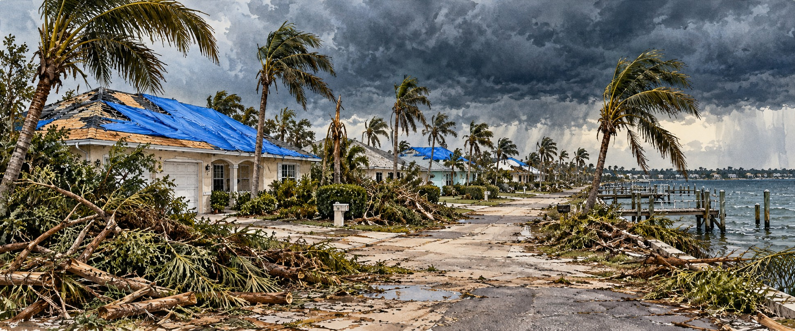

Frances and Jeanne (2004)
The Month Florida Never Got to Recover

A roof in Stuart, Florida, was repaired twice in three weeks.
Martin Memorial Hospital North in Stuart had its roof torn open by Hurricane Frances in early September 2004. Crews patched it over the following days, and then Hurricane Jeanne tore it open again, in nearly the same place, before the month was out. That one roof says what happened to the Treasure Coast that autumn: not two separate disasters but one compounding ordeal, with twenty-one days between landfalls and no time to recover from the first before the second arrived.
A Storm Too Big to Hurry
Frances grew from a Cape Verde wave in late August 2004 and peaked as a Category 4 with 145-mile-per-hour winds. Its distinction was size: an eye roughly fifty miles across and a wind field broad enough to bring damaging weather to a wide stretch of coast. It meandered through the Bahamas for days, then made landfall at the southern end of Hutchinson Island, near Sewall’s Point, at 4:30 a.m. on September 5 as a Category 2 with winds near 105 miles per hour. It then took nearly twenty-four hours to cross the peninsula, exiting near New Port Richey, wearing the state down with hours of sustained wind and rain.
What Frances Broke
Across Martin County, 1,129 dwellings were left uninhabitable and at least fifty-two were destroyed outright; roughly half of the businesses in neighboring Indian River County were damaged. Storm surge reached nearly six feet at the St. Lucie Lock, with the National Weather Service estimating as high as eight feet near Vero Beach. At Kennedy Space Center, 820 aluminum panels were torn from the Vehicle Assembly Building, and damage to space and military installations around Cape Canaveral reached about $100 million.
Frances also spawned 103 confirmed tornadoes from Florida to Virginia between September 4 and 8. The entire state was declared a federal disaster area, and federal aid ultimately passed one billion dollars, including nearly 230,000 individual assistance applications.
Twenty-One Days
Debris was still piled on the roadsides, blue tarps were still going up, and adjusters were still working through Charley’s claims when Jeanne began organizing. Before it ever approached Florida, Jeanne killed seven people in Puerto Rico and twenty-three in the Dominican Republic, then stalled off Haiti, where flash floods and landslides killed more than three thousand people in and around Gonaïves. That toll far exceeds anything Jeanne caused in Florida, and it should not be minimized because the storm’s American chapter came afterward.
Jeanne looped clockwise in the Atlantic, struck the Bahamas, and made landfall at 4:00 a.m. on September 26 at the southern end of Hutchinson Island, near Sewall’s Point, the same stretch Frances had struck. Accounts place the two landfalls between two and five miles apart.
The Same Movie, Twice
WKMG meteorologist Tom Sorrells put it this way: “It was like watching a bad episode of the same movie.” Jeanne came ashore as a Category 3 with winds near 120 miles per hour and an eye about fifty-eight miles across. Thousands of homes in St. Lucie County were damaged or destroyed a second time, mobile home parks already weakened by Frances took a second blow, more than 41,000 homes in Indian River County sustained damage, and high tides at Fort Pierce Inlet destroyed dozens of boats that had only just been returned to the water.
A Population With Nothing Left to Give
Some Central Florida residents were still without power from Charley when Jeanne arrived. Governor Jeb Bush, wearing a button reading “I survived damn near everything,” told reporters, “We will survive whatever comes at us.” Resilience and exhaustion are not opposites, and Florida in late September 2004 was both.
What the Interval Cost
Frances caused roughly $8.9 to $10 billion in damage and at least six direct U.S. deaths, with more than forty deaths tied to it in all. Jeanne added $7 to $7.5 billion, though officials struggled to separate the figures because cleanup from Frances was incomplete. With Charley and Ivan, the season caused tens of billions of dollars in damage, and all four storm names were retired. A University of Florida study found homes built to the post-Andrew building code suffered less damage, even when struck twice in one month.
Quick Facts
| Frances landfall | Hutchinson Island near Sewall’s Point, 4:30 a.m., September 5, 2004; Category 2, 105 mph |
|---|---|
| Time to cross Florida | Nearly 24 hours, exiting near New Port Richey |
| Frances tornadoes | 103 confirmed, Florida to Virginia |
| Jeanne landfall | Hutchinson Island near Sewall’s Point, 4:00 a.m., September 26, 2004; Category 3, 120 mph |
| Distance between landfalls | About 2–5 miles (accounts differ) |
| Time between storms | 21 days |
| Damage | Frances $8.9–$10 billion; Jeanne $7–$7.5 billion |
| Haiti toll from Jeanne | More than 3,000 deaths, mostly in Gonaïves |
Did You Know?
The same Stuart hospital roof was torn open by Frances and again by Jeanne.
Frances took nearly a full day to cross Florida.
Charley, Frances, Ivan and Jeanne were all retired as hurricane names after 2004.
Vocabulary
Eyewall replacement cycle: a process in which a hurricane’s inner wind core is replaced by a new outer one, often weakening the storm temporarily.
Storm tide: the combined water level from storm surge and the normal astronomical tide.
Federal disaster area: a designation that unlocks federal aid for affected communities.
Discussion Questions
1. Why is recovery different when a second storm arrives before the first is repaired?
2. Why do Jeanne’s Haiti deaths belong in a Florida history of the storm?
Related Articles
FLH-0008 — Hurricane Charley (2004)
FLH-0007 — Hurricane Andrew (1992)
FLH-0010 — Hurricane Wilma (2005)
FLH-0011 — Hurricane Irma (2017)
FLH-0012 — Hurricane Ian (2022)
Sources
Wikipedia. “Hurricane Frances” and “Hurricane Jeanne.”
NOAA AOML. “10th Anniversary of Hurricane Jeanne.” aoml.noaa.gov
Florida Department of Environmental Protection. “Hurricane Frances / Hurricane Jeanne: Characteristics and Storm Tide Evaluation.” floridadep.gov
Miami Herald, via GovTech. “What It Looked Like When 4 Hurricanes Hit Florida.” govtech.com
Fox Weather. “2004: A Hurricane Season That Florida Never Wants to Repeat.” foxweather.com
CBS12 / WPEC and WTVX. “Gulf Storms Revive Memories of Back-to-Back Landfalls Near Stuart in 2004.”
ClickOrlando / WKMG. “3,025 Lives Lost: Looking Back at Hurricane Jeanne’s Devastation 16 Years Later.” clickorlando.com
National Weather Service, Tampa Bay. “20 Year Anniversary of the 2004 Hurricane Season.” weather.gov/tbw
Florida Tech WHIRL. “Hurricane Frances (2004)” damage assessment. research.fit.edu